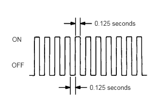

| Last Modified: 10-07-2025 | 6.11:8.1.0 | Doc ID: RM100000002GMMC |
| Model Year Start: 2024 | Model: Tacoma | Prod Date Range: [12/2023 - ] |
| Title: T24A-FTS (ENGINE CONTROL): SFI SYSTEM (for Gasoline Model): CHECK MODE PROCEDURE; 2024 - 2026 MY Tacoma [12/2023 - ] | ||
CHECK MODE PROCEDURE
NOTICE:
All of the stored DTCs and Freeze Frame Data are cleared if: 1) the ECM is changed from normal mode to check mode or vice versa; or 2) the ignition switch is turned from ON to ACC or off while in check mode. Before changing modes, always check for and note any DTCs and Freeze Frame Data.
HINT:
Compared to normal mode, check mode is more sensitive to malfunctions. Therefore, check mode can detect malfunctions that cannot be detected in normal mode.
CHECK MODE PROCEDURE
(a) Check and ensure the following conditions:
(1) Battery voltage is 11 V or higher.
(2) Accelerator pedal fully released.
(3) Shift lever is in P or Neutral.
(4) A/C switch is off.
(b) Turn the ignition switch off.
(c) Enter the following menus: Powertrain / Engine / Utility / Check Mode.
Powertrain > Engine > Utility
|
Tester Display |
|---|
|
Check Mode |
(d) Change the ECM from normal mode to check mode.
(e) Check that the MIL flashes as shown in the illustration.
(f) Start the engine.
(g) Check that the MIL turns off.
(h) Simulate the conditions of the malfunction described by the customer.
(i) Check for DTCs and Freeze Frame Data using the GTS.